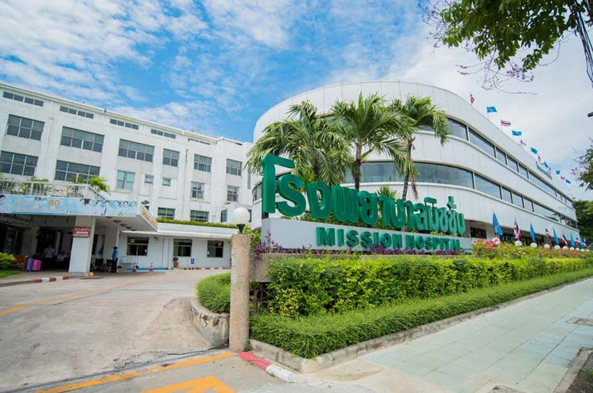
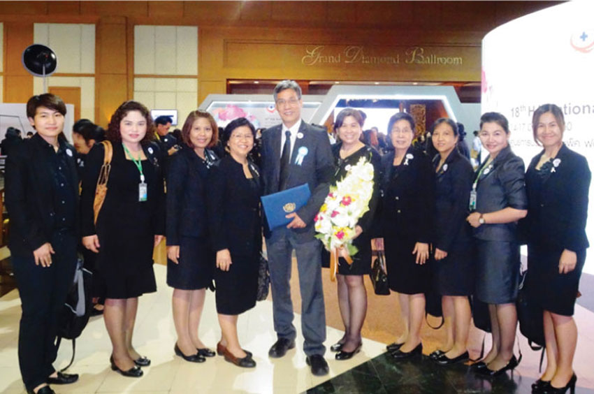

Overview
Mission Hospital is a 110-bed general hospital in the heart of Bangkok, Thailand. Mission Hospital was founded in 1937 and today serves Thai and international communities. The hospital is owned and operated by the Christian Medical Foundation of Seventh-Day Adventists and it is part of the worldwide Adventist Healthcare network. Mission Hospital offers state of the art diagnostic, therapeutic and emergency facilities. Mission Hospital has served patients from over 60 countries world-wide. English and other language speaking staff are available to assist our international customers. Our Medical coordination office schedules appointmens, procedures and translators for our customer’ needs. Mission Hospital is proud to be one of the first private hospitals in Thailand to receive Hospital Accreditation (HA) Re-Accreditation approval. Mission Holistic and humanized patient’s care. Uphold the moral and ethical aspect of care. Efficient and up to date medical technology as per hospital context. Curing and rehabilitating along with health promotion and prevention Vision Mission Hospital aims to give the medical service with humanized care by follow the example of Jesus Christ’s healing ministry, health promotion and prevention in order to foster the service provider and service recipient to gain happiness and quality of life. Mission Hospital Milestones Mission Hospital was established: May 10, 1937 Our School of Nursing opened in 1941. The grand opening of Mission Hospital, then known as The Bangkok Sanitarium and Hospital was on March 18, 1951. The School of Medical Technology was launched in 1951 Dental department was opened in 1957.
Accreditation
Mission Hospital is proud to be one of the first few private hospitals in Thailand to receive Hospital Accreditation (HA). The HA program is a program for quality improvement for both public and private hospitals in Thailand. The fundamentals of this program are patient focus, organizational and multi-disciplinary teamwork and continuous self-assessment and improvement. The HA program began in 1994 out of the need for a more comprehensive hospital standard. Hospital standards for the US, Canada, Australia and UK were reviewed and the Thai hospital standard was drafted in 1996. Thirty-five hospitals from both private and public sectors joined the HA pilot program in order to create model hospitals, fine tune standards, strengthen the initial team of surveyors, and promote better understanding of the program by the public and healthcare professionals. In 1999, HA-Thailand conducted its first survey on 4 hospitals. The survey process was a combination of the Canadian and the US style. The rating method was based on the European Quality Award. Nine general standards were used – mission and vision, organization, manpower management, education and training, policies and procedures, environment of care, instruments, systems and processes and continuous quality improvement activities and results. The HA-Thailand program, has maintained a high standard. By 2002, fewer than 10 private of 470 private hospitals had received HA accreditation. Mission Hospital is honored in the top five hospitals to receive this accreditation. The HA standards continue to evolve and improve, following the trends in the United States. In 2004, patient safety became a top priority. Hospitals now focus on patient identification, a high-risk medication alert system, correct surgical site, infusion pumps, medical and drug abbreviations, and prevention of hospital-acquired infections.